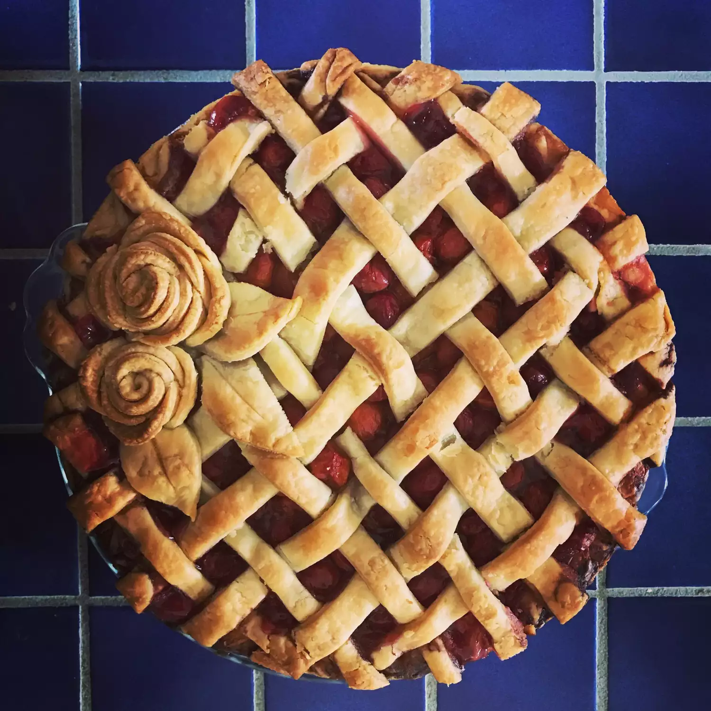
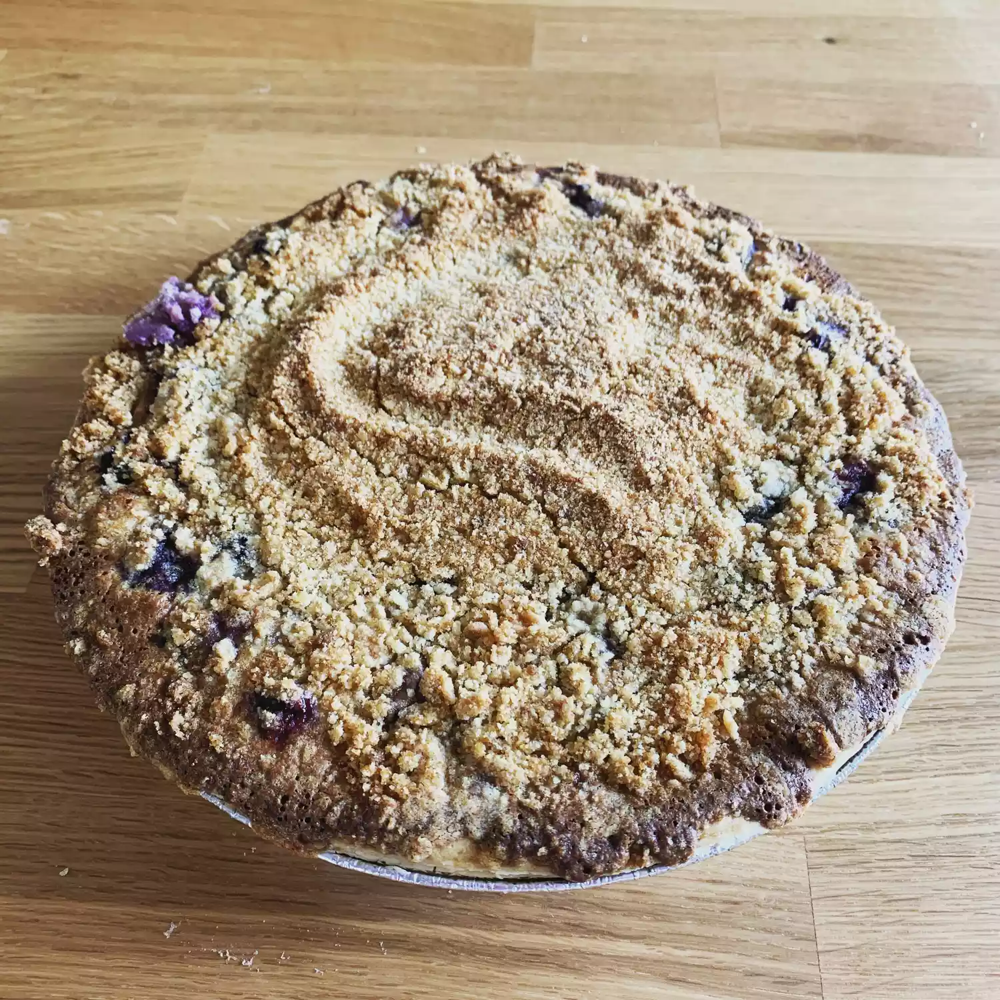

Cherry Pie
A burst of summer sunshine captured in a flaky golden crust.
Sweet, juicy cherries mingle with tangy zest,
creating a symphony of flavor in every bite.
The buttery, delicate pastry shatters under your fork,
releasing a cloud of warm, cherry-infused bliss
Strawberry Pie
A symphony of summer in every bite.
Golden petals of pastry embrace a crimson heart of pure indulgence.
Sweet nectar dances on the tongue, a playful prelude to the strawberry's sweet surrender.
Blueberry Pie
A buttery embrace cradles a vibrant jewel of blueberries,
each burst of juicy sweetness a delightful surprise.
Warm spices dance with the berries, while the flaky crust melts,
leaving a trail of pure, summery bliss.
Blackberry Pie
A symphony of sweet and tart, this blackberry pie is a summer dream.
Flaky layers encase a jewel-toned filling, bursting with juicy blackberries.
Each bite is a heavenly escape into pure berry bliss!
Three-berry Pie

A burst of summer sunshine in every bite, this triple berry pie is a tantalizing treat.
Sweet strawberries, tangy blueberries, and juicy raspberries dance on the tongue,
creating a symphony of flavor in a flaky, golden crust.